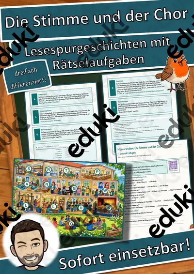
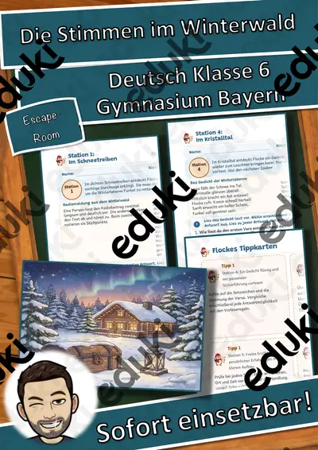

Lesespur: Das Gewissen und die innere Stimme – Lesespurgeschichte mit Rätseln (Klasse 10)
Das Gewissen und die innere Stimme – Lesespurgeschichte Ethik (Klasse 9-10)Begib dich mit deiner Klasse auf eine spannende Lesespur über das Gewissen! Die beiden Jugendlichen Jan und Marie sind einen Nachmittag lang im Schulviertel unterwegs – vom Schulhof über die Bushaltestelle, den Kiosk, die Bibliothek, die Sporthalle, den Marktplatz, den Stadtpark und das Jugendzentrum bis zum Aussichtsturm. An jeder Station erleben sie eine kleine Alltagssituation, in der sich ihr Gewissen meldet: ein gefundenes Portemonnaie, zu viel Wechselgeld, eine ungerechte Beschuldigung, Gruppendruck. So erfahren sie, was das Gewissen ist und wie es uns Orientierung gibt. Am Ende jedes Abschnitts verrät ein Hinweis den nächsten Ort auf dem Stadtplan – nur wer richtig liest und mitdenkt, findet den Weg und sammelt alle geheimen Buchstaben zum Lösungswort.
Die perfekte Lesespur für den ETHIKUNTERRICHT der Sekundarstufe I: Sie verbindet motivierendes, sinnentnehmendes Lesen mit anspruchsvollen Gesprächsanlässen über Gewissen, Schuld und Verantwortung – und schult zugleich das genaue Arbeiten. Das Material ist SOFORT EINSETZBAR und in DREI DIFFERENZIERUNGSSTUFEN (leicht ★ / mittel ★★ / schwer ★★★) angelegt, sodass alle Jugendlichen einer Klasse am selben Thema arbeiten können. Neutral und wertfrei gehalten.WICHTIG: Das komplette Material ist sowohl in FARBE als auch in SCHWARZ-WEISS enthalten – ideal zum Sparen von Druckkosten.DAS IST ENTHALTEN
- Lesespurgeschichte in 3 Niveaus (leicht, mittel, schwer)
- farbiger Stadtplan als Suchkarte
- Hörverstehen mit QR-Code zur MP3 (selbstständiges Hören mit Kopfhörern)
- vier Aufträge auf dem Weg: ein Verbinde-Rätsel, ein Quiz, eine Rechenaufgabe und ein Steckbrief
- Rätselseite (Wörter-Suchsel + Wissensfragen)
- Ausmalbild zum Thema
- ausführliches Lösungsblatt für die Lehrkraft
- alles zusätzlich als komplette Schwarz-Weiß-VarianteSO FUNKTIONIERT DIE LESESPURDie Jugendlichen lesen ab START, entnehmen dem Text einen Hinweis auf einen Ort in der Stadt, suchen ihn auf dem Plan und lesen bei dieser Station weiter. An jeder richtigen Station gibt es einen Sammelbuchstaben. Eingebaute Sackgassen (Mülltonne, Ampel, Werbetafel, Hydrant) gehören zwar in die Stadt, sind aber keine Stationen der Spur und dienen der Selbstkontrolle. Am Ende werden die gesammelten Buchstaben umgestellt und ergeben ein geheimes Lösungswort. (Die Lösungen sind selbstverständlich nur im Lösungsblatt für die Lehrkraft enthalten.)INHALTLICHER SCHWERPUNKTDas Gewissen ist die innere Stimme, die uns sagt, ob eine Handlung richtig oder falsch ist. Es meldet sich zu zwei Zeitpunkten: vor einer Handlung als Warnung und danach als gutes Gefühl (wenn wir richtig gehandelt haben) oder als schlechtes Gefühl und Reue. Das Gewissen wird nicht einfach mitgeboren, sondern durch Erziehung, Werte, Vorbilder und eigene Erfahrungen geprägt – deshalb kann es sich auch irren oder beeinflussen lassen, und man sollte ihm nicht blind folgen, sondern es mit dem Verstand prüfen. Es dient als wichtige Orientierungshilfe, um eigenes und fremdes Handeln zu beurteilen. Oft bedeutet es, gegen den eigenen Vorteil zu handeln: ehrlich zu sein, Verantwortung zu übernehmen oder mutig einzugreifen (Zivilcourage). Und ein schlechtes Gewissen lässt sich klären – indem man Fehler eingesteht, Verantwortung übernimmt und wiedergutmacht. Das Material lädt zum Nachdenken und Diskutieren über konkrete Gewissens- und Dilemma-Situationen ein.ABGEDECKTER LEHRPLAN (Klasse 9-10, Ethik)
- Ethik (LehrplanPLUS Bayern) – „Gewissen und Verantwortung" (Mittelschule/Realschule Klasse 10, Gymnasium Klasse 9): das Gewissen wahrnehmen; erkennen, wie es gebildet und beeinflusst wird; es als Orientierungshilfe zur Beurteilung von Handeln schätzen; Schuld, Wiedergutmachung und Verantwortung (Absicht, Mittel, Folgen) reflektieren.
- Deutsch – Lesen mit Texten und Medien umgehen: Lesestrategien anwenden, Texten gezielt Informationen entnehmen, sinnentnehmend und selektiv lesen; Zuhören: einem Sachhörtext konzentriert folgen (Hörverstehen mit MP3).
- Mathematik – Rechnen im Sachzusammenhang.
- Fächerübergreifend / Kompetenzen: genaues Lesen und Prüfen, ethisches Urteilen, Perspektivübernahme, Konzentration und Ausdauer, kreatives Gestalten (Ausmalbild).
Geeignet für Freiarbeit, Stationenlernen, Vertretungsstunden, Wochenplan, den Baustein Werteerziehung und Homeschooling. Klassenstufe 9-10 (differenziert einsetzbar auch in angrenzenden Jahrgangsstufen).
Ähnliche Materialien

Gewissen Lückentext mit Wortspeicher Hörverstehen und Suchsel

Lesespur: Der Kanon: eine Melodie, viele Stimmen – Lesespurgeschichte mit Rätseln (Klasse 3)

Lesespur: Die Stimme und der Chor: wie wir singen – Lesespurgeschichte mit Rätseln (Klasse 6)

Lesespur: Blues und Gospel: Stimmen der Hoffnung – Lesespurgeschichte mit Rätseln (Klasse 9)

Bundesminister des Innern - Alexander Dobrindt

Escape-Room Die Stimmen im Winterwald – Deutsch Klasse 6 Gymnasium: 6 Stationen, 2 Schlösser

Echte Freunde – Freundschaft, Clique und Gruppendruck – Lesespurgeschichte mit Rätselaufgaben (Klasse 6)